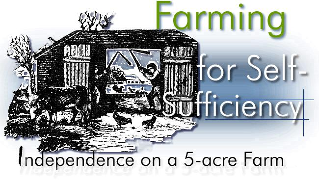
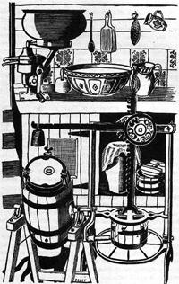
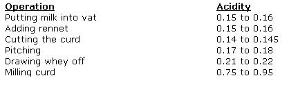

Ah, the vicissitudes of time. Two years ago, when there were NO currently relevant small-scale-farming introductory handbooks available, many of us welcomed the publication of Richard Langer's Grow !t! with open arms. Now that we're all older and more experienced, however, some folks find it increasingly easy to criticize that breakthrough beginner's guide (see the Feedback sections of MOTHER NOS. 23, 24 and 25).
Which brings us to another breakthrough book that is just as important (probably more so) now as Grow It! was two years ago and which may well come up for its share of criticism in another 24 months or so.
Be that as it may, John and Sally Seymour's record of 18 successful years on a shirttail-sized homestead. in England is important now and should offer welcome encouragement to today's back -to-the-landers both real and imaginary. I started serializing the book in my No. 25 issue and I'm sure that many readers will want a personal copy for their home libraries. -MOTHER.
DAIRY
if the butter do taste a little of the Swedish turnip, it
will do very well where there is plenty of that sweet
sauce which early rising and bodily labour are ever sure
to bring.
William
Cobbet
MILK
Milk is one of the most complex organic substances that one could possibly imagine, and the extraordinary things that it will do, and that can be done with it, are legion. Long before the word 'plastics' was invented people were making knitting needles and spectacle frames out of it.
If you leave fresh milk alone in the summer time it curdles. This is because the lactic acid bacteria (Streptococcus lacticus) feed upon the lactose which is one of the constituents of milk (its sugar in fact) and change the lactose sugar into lactic acid. As the milk becomes more acid the isoelectric point is reached and at this point the particles of the milk no longer repel each other, but come together into what we call curd. Milk curdles best in warm weather or in warm climates (at about 77° F or 25° C). We consume a great deal of naturally curdled milk: it is acid in taste, but mildly acid and very good and digestible. In South Africa it is called dik melk and is a major article of diet. The South Africans have a refinement of dik melk which they call calabash. It is made in this way: milk is put inside a hollowed-out calabash and allowed to curdle. Every day some of the curdled milk is taken out of the calabash and some more fresh milk put in. Before it is taken out the calabash is shaken like a cocktail shaker. As the weeks go by the taste of the stuff that comes out of the calabash gets stronger and stronger until it is simply delicious. You must never 'starve' it, or it will turn bad: every day some must be taken out and some put in. I have drunk from a calabash which had been kept going thus for six years, and I kept one going myself for a year. I know somebody who does it in Wales, but in a bottle.
You can cause milk to clot immediately, that is form curds, by adding rennet. Rennet is stuff that is taken from a calf's fourth stomach (see Chapter 9). Presumably you could obtain it yourself if you killed a young calf, but we buy it in splendid little stoneware bottles from R.J. Fullwood and Bland, 25 Bevenden Street, London N.I.
Milk contains all the vitamins known to man, and no less than sixty fatty acids have so far been identified in milk, which gives an inkling of its enormous complexity. Let it be thought that drinking or eating all these fatty acids will lead to coronary thrombosis, let us remember the Borana of northern Kenya and southern Ethiopia, and the Turkana their sworn enemies, who live on nothing else but milk except for an occasional gorge on meat when they ritually slaughter an animal. No Borana has ever been known to have coronary thrombosis. I knew these people very well and they were very healthy. The only element that milk is short of, from a dietetic point of view, is iron.
If you keep milk at a higher temperature than 77° F (25° C), say at 95° F (35° C), and inoculate it with the right bacteria (Bacillus bulgaricusJ, you will get not dik melk but yoghourt. Bulgaricus likes more warmth than S. lacticus and can tolerate much higher acidity. The way to make yoghourt is to boil your milk (to kill rival bacteria), cool it to 95° F (35° C), inoculate it with live yoghourt, and keep it at that temperature. It will keep quite well owing to its acidity.
Pasteurizing is done to all commercial milk nowadays: it kills T.B. and brucellosis bacteria and makes the milk keep a long time. It can only be done with special equipment, and the self-supporter will never wish to do it: his cows haven't got brucellosis or T.B. and he doesn't want his milk to keep for long periods. In any case, pasteurized milk is only fit for towns people, who have got to the state when they don't know anything better.
To pasteurize milk by the Holder Method keep it at from 145° F (62° C) to 150° F (65° C) for 30 minutes.
To pasteurize by the Flash Method heat to 158° F (70° C) quickly and cool immediately.
CREAM
If you want cream you can get it by 'setting' the milk, as soon as it comes from the cow, preferably in the cool, whereupon the cream floats to the surface. You can get it off with a 'fleeter' or skimmer (a little metal dish with holes in it), or by setting it in a wide slate trough with a hole in the bottom, the hole bunged up with a stick. When the cream has risen pull the stick out; the skimmed milk will run through the hole and leave the cream sticking to the bottom of the trough. You can also put the milk, fresh, through a separator. This is a centrifuge, and separates the cream from the milk by whirling both round and round whereupon the heavier milk is flung outwards and the lighter cream is forced inwards. We have a separator. It is very good, but as it takes some time to clean and reassemble we only use it if we have a lot of milk to deal with. It is more efficient than 'setting'. Set cream has 20 percent butter fat; separated cream has 35 percent. The milk left over after separating is naturally very thin (practically no butter fat at all) but is still rich in vitamins and minerals, and marvellous for all young animals and for pigs. To make Devonshire cream, set your fresh milk for 12 hours, scald to 187° F (92° C), cool for 24 hours and then skim.
BUTTER
Butter is made by bashing cream about after it has 'ripened', which means after the lactic acid bacteria have got to work long enough to turn some of the lactose, or milk sugar, into lactic acid. Commercially the cream is pasteurized and then inoculated with a pure culture of lactic acid bacteria. This is why shop butter is so reliably uniform, and so reliably dull. We make butter by keeping the cream for at least 24 hours (twice a day we add some more to it-but the last lot to be put in must be left in for at least twelve hours before churning) and then churning. Nowadays we have a small glass churn with an electrically driven paddle which revolves in it. It takes about five minutes at the longest-often not more than one minute. In theory the cream should be ripened at 68° F (20° C), but we can't be so theoretical.
Before we had the electric paddle we used a variety of churns. If you have plenty of cream, say the cream from three cows, you can usefully use one of those beautiful varnished wooden butter churns, that turn end-over-end. A wooden cylinder open at the top, with a plunger in it that was worked up and down, was one way of doing it. A 'blow' churn, which is a glass jar with a hand-operated paddle turning in it, is very good if you can get one. Anything' that gives the cream a good bashing will do. The whole secret is to get the cream properly ripened first. If you have trouble try keeping it at a higher temperature, and try adding some existing sour milk or cream as a 'starter'. If all else fails send off for a pure culture of lactic acid bacteria, but I never met anybody who had to do that. If the butter won't 'come', don't go on churning hopelessly for hours. Put it in the warm, if it is too cold, and wait a few hours, and try again. Don't get it too warm though: 68° F (20° C) is about right.
When the butter 'comes' a dramatic thing happens. Suddenly your cream separates into butter milk, and a mass of little yellow pellets as big as Number Six shot. If it is too hot the pellets will be larger, and soft: if too cold they will be smaller. Drain the butter milk out, and put it to one side. It is almost noble drink, and if I had enough butter milk to drink I don't think I would often drink anything else.
Now put plenty of cold water in your butter, churn again and drain. The whole purpose now is to wash the butter, to get every drop of milk out of it. The cream you made the butter from was quite sour. The butter milk is beautifully sour. But the butter must not be the least bit sour. Therefore, if you want your butter to keep well and not go rancid, wash and wash again. Wash until the water comes out quite clear. Squodge the butter up in the cold water as much as you like. Squeeze the water out of it again. Dump the butter out on to a clean board-wash and squeeze-wash and squeeze. The old fashioned wooden butter-maker was a wonderful tool-I wish I had one.
Sprinkle salt on, according to taste, squodge the butter about hard, taste a bit. If it's too salt wash some salt out with fresh water and taste again. If it's not salt enough add some more salt and squodge again. Obviously you must squodge until the salt is evenly mixed right through the butter. If 2.5 percent of the whole butter consists of salt (in other words if it is pretty salty butter) the butter will keep for a long time. Unsalty butter won't keep for so long unless you keep it in the deep freeze. Always wrap butter-light and air oxydize the unsaturated fatty acids called oleic and linoleic and cause rancidity. Rancidity is caused in wrapped butter by the decomposition of butyrin into butyric acid.
If you heat butter you drive off the volatile fats which cause rancidity, and your butter then does not go rancid. Nor does it taste any more like butter, because you have lost the very elements that make it so taste. But the Indians turn this into account by making ghee (samli in East Africa). If you want to preserve butter in a glut, and have no deep freeze, you can do the same. Put the butter in a pot over the fire and let it simmer for an hour. Skim the scum off. Pour it into a sterilized container, cover from the air, and it will keep many months. It won't taste like butter but it will be very good to cook with: part of the glorious flavour of Indian food comes from the ghee in which it is cooked.
But in our cooler climate you can store well-salted butter in barrels right into the winter. The barrel (or earthenware tub) should be scalded, dried in the wind, and the butter should be flung hard into it to exclude all air, each layer sprinkled with salt and banged down with the closed fist. All air must be driven out. If the butter is too salt when you want to use it you can always wash the salt out again.
A word here about the cleaning of all dairy implements. If you want all your dairy produce to keep well, and not taste tainted, scrupulous cleanliness is necessary in the dairy. From the hands that milk the cow, through the milking pail, 'setting' pans or separator, butter churn, 'Scots hands', butter worker or draining board on which the butter is washed, cheese making bowls, chessits, followers, cloths: everything must be clean. All utensils must be cleaned of any matter sticking to them, then scalded thoroughly in boiling water, washed well in cold clean water (and it must be clean), put upside down to rinse and, if a wooden implement, put out in the clean wind to dry. Never use a 'tea-towel' or dish cloth to dry dairy utensils. Such rags are laden with germs. If your milk starts going sour too soon you are not sterilizing something properly. Remember the sequence: scour thoroughly (you don't have to use any beastly detergent, which will make your septic tank foam and stink), scald with boiling water, rinse immediately in clean cold water, turn upside down to drain-in the wind if possible. Store upside down so dust doesn't settle inside.
CHEESE
Cream cheese is terribly easy to make, but as it won't keep long there is no great advantage in making it, except in so far as it can be very pleasant to eat. When milk goes thick on you( as it often will) simply pour the curds and they into a muslin and hang it up to drip. The whey will run out , for the pigs. the curd will turn into cream cheese. you can flavour it with salt and herbs and all sorts of things. I've heard of wrapping it in hazel leaves, then cloth , and burying in the garden for three days.
But it is the making of hard cheese that is important to the self supporter, or the self-supporting community, for here we have a way of storing the summer flush of milk (which we can take as being free because it is all made from grass) for the winter, when milk is scarce and expensive. For a non-vegan vegetarian community I would say that the manufacture of cheese was absolutely essential, but for any homesteader it is an enormous asset. A pound of cheese has 2,000 calories of energy in it. Meat from the fore-quarters of an ox has 1,100 calories. No wonder the navigators who dug the canals all over England, and later built the railways, made cheese the greater part of their diet. Good cheese from unpasteurized milk and honest wholemeal bread gave them the strength to move mountains.
To make cheese you will need some equipment. You will need a cheese press (unless you make Stilton, which is unpressed), a chessit and a follower. The chessit is a cylindrical barrel open at the top and with holes in it to let out the whey. The follower is a piston which goes down in it and presses the cheese: just a round wooden board, in fact. The press is an arrangement of levers, heavy weights and gears capable of putting, in some cases, up to two tons of pressure on the cheese, by means of the follower inside the chessit. You can still buy old cheese presses in the countryside, but as more and more 'selfsupporters' come about they are getting very scarce. It should not be beyond the wit of man to make one. A car jack is capable of exerting enough pressure but it would be hard to measure this pressure. Maybe O.M.C.S. (Old Mother Common Sense) would have to be brought into play again. You can get cheese presses from Messrs. Clares (Wells) Ltd., Somerset.
The making of good, and consistently good, hard cheese is a very difficult and extremely complicated operation. Many an old farmer's wife, in the days before acidimeters and pure cultures of this and that, and all the rest of the scientific stuff were invented, turned out fine cheese year after year: probably much better than most of the cheese that is made today under the most scientific conditions. But one must remember that the farmer's wife in question had inherited her dairy from her mother or mother-in-law, had been taught to make the local cheese as a child, and had developed what was almost an instinct to tell her just when to do each separate operation with the same precision as the modern cheese maker with his thermometers and acidimeters. That craft and that skill have now died out: killed by the onslaught of shiploads of factory made cheese from over the seas, and two world wars which made real farm cheese making illegal, like spying for the enemy, and which killed by stupid legislation so many of our inherited country skills and crafts. Sally and I sailed a boat to Holland once, and tied up on a canal at a remote farm, and there found the farmer, his wife, and no less than sixteen children. The cowshed was attached to the dwelling house (an excellent arrangement) and the farmer milked sixteen cows. I asked him, in my foolishness, if he had a milking machine. He pointed to his children and said: 'What do I want with a milking machine?' He turned all his surplus milk into cheese: huge cart-wheel cheeses, some of which were nieuw kaas or new cheese, and eaten after two months, and others oud kaas, which was soaked in brine and then kept in the great cheese cellar for a year. We tried both, and they were both delicious beyond any telling of it. We bought a whole nieuw kaas and it kept us in marvellous cheese for six months, and the last slice was as delicious as the first. This cheese was made completely traditionally, with no scientific instruments at all, and Meneer van de Poel told me they never had a bad cheese.
The Dutch cheese (Gouda and Edam) that is sent to England is specially made for the English market out of pasteurized separated milk in big factories. The Dutch themselves will not eat factory-made cheese. Much Dutch cheese is sent to France, and the French will not buy factory-made cheese. Only farm cheese is sold to the domestic market in Holland and to France. Only the English will take the factory-made stuff.
Let us get back to our self-supporter's cheese: the selfsupporter is not starting with an inherited lore of cheese making, and therefore he must use every aid available to him. The main aids are a thermometer and an acidimeters. Sally has been making cheese for the last fifteen years without the use of the latter, and I will describe the way she does it with, perhaps, a few flourishes of my own. I am not going to pretend that every Sally cheese from the year dot has been a prizewinner because that is not the case. I know a woman who makes cheese by more or less this method (without an acidimeter) and for many years she made the most splendid cheese in the world. You could not have found better cheese had you searched the Earth to the Antipodes, and it was a standing invitation to gluttony. But suddenly her cheese lost its fine quality, although she did not alter her methods in the least degree. Why? A change of bug? No one knows. I think that she should now turn to the acidimeter, and perhaps also starter too, and then perhaps she would discover the reason for her falling-off.
But this is more or less the way in which Sally makes cheese. Because she generally only milks one cow, and in the summer there is a big demand with us for fresh milk, she generally has to save up several days' milk to get enough for a cheese. Well that in itself is wrong. What should happen is that you keep the evening's milk, and in the morning you dump the morning's milk into it. Then you make your cheese. This sounds trivial, but in fact it is very important. But before you dump the morning's milk in with the evening's milk you have to go through a little rigmarole with the cream of the evening's milk, for if you don't the cream won't mix back again with the milk (it has all come to the surface in the night of course) and you will lose the cream in the whey which you give to the pigs and have 'thin' cheese. What you do is to fleet the cream off the evening's milk (skim it), raise its temperature to 85° F (30° C), and dump it back in the milk again. Then stir it well in. Then dump in the morning's milk.
If you have starter put it in now. I will discuss starter, and how to use it, later on. Sally has never used it, but that does not mean to say that it would not be better if she did.
Raise the temperature of the milk to 90° F (32° C).
Put 1 teaspoonful of rennet in a cupful of cold water and put it in. (Rennet from R.J. Fullwood and Bland, 25 Bevenden Street, London N.I.)
Stir for about five minutes with your hand. As soon as the milk begins to cling to your fingers when you pull them out stop stirring. Another test is to drop a drop of water in the milk. If the water just disappears go on stirring. If it stays on top in a globule then stop. This again sounds trivial, but it is very important to get it right. The thing is, if you don't stir you will lose the cream from your milk and your cheese will be thin. Now as soon as you can no longer go on stirring begin to stroke the top of the milk with the fleeter (the fleeter is a slightly curved metal disc with a handle with holes in it, used for fleeting, or skimming, cream off milk) in order to 'send the cream down'. Do this for a few minutes.
When the curd no longer sticks to your hand, but feels firm when you press it, i.e., in about fifty minutes from when you stopped stirring, cut the curd. You will have by then curds and whey. Cut the curds (which don't take much cutting), either with a knife or, if you have them, with a pair of American curd knives. The latter are multi-bladed knives, one with vertical blades and one with horizontal. Your aim is to cut the curd into cubes about 3/4 inch square. So with curd knives you will obviously make one pass with the horizontal blades and two, at right angles to each other, with the vertical. No more. If you just have to use an ordinary knife cut diagonally from one side of the receptacle, then diagonally from the other two sides, trying to achieve cubes 3/4 inch square. You don't have to measure them of course-it's not that critical.
Warm the curds and whey very slowly-not quicker than a rise of one degree in three minutes-to 100° F (38° C). While this warming is going on stir the curds and whey very gently with the hand. If you stir too hard you will lose cream which is the one thing you want to avoid. This particular heating is called the scalding. It is not done for every cheese, Stilton for example. If you have a water-jacketed cheese vat this raising of the temperature of course is easy: if you have not the best way to do it is to scoop a saucepanful of whey out, put it on the stove, heat it, and put it back again, Go on repeating this until you have got the whole to 100° F.
The next operation, which is a non-operation, is called pitching. All you do is leave the stuff alone. The curd just soaks in its whey, and you don't stir it or anything, but what you do do is keep testing for acidity. For the idea of the pitching is to give the lactic acid bacteria time to work and attain a certain degree of acidity, and it is most important that this acidity should be just right. If you do not use an acidimeter the Way to test for acidity is to take a piece of curd, touch it on a hot iron (the hot stove-top will do) and draw it away. If the acidity is just right threads of just half an inch long will come off from the curd before they break. If they are shorter than this leave to pitch longer. If they are longer than half an inch you are going to have a dry acid cheese and there's nothing you can do about it. So when the threads are just half an inch-drain off the whey. Into the pig bucket with it. It has done its work of raising the acidity of the curd.
Now comes cheddaring. This is the process of wrapping the curd into bundles about nine inches across in cheese cloth and leaving them on a sloping surface so that the whey can gently drain out of them. Turn the bundles from time to time. Then milling. If you haven't got a curd-mill (and why should you have?) get some of those guitar-playing friends of yours, see that they wash their hands carefully, and exhort them to break the curd up into pieces as big as walnuts. And salting. Chuck an ounce of salt in to every 4 Ibs. of curd and mix well through.
Now take your chessit, which is a cylinder of wood or metal, line it with a cheese cloth, and load your walnut-size pieces into it. Wrap the cloth over the top of it all and put it in your cheese press. Apply about a couple of stone of pressure. In other words very light.
After say six hours pull the cheese out, take the cloth off it and wring it out in warm water, wrap the cheese up in it again, turn the cheese, and return it to the chessit. Apply half a cwt. pressure.
Leave it thus for two days, turning it once. Then give it half a ton pressure for a couple of days, turning it once. Take it out, paste on clean bandages with flour and water, put it on a clean shelf (very important) in a well-ventilated store with a temperature of about 55° to 60° F (13° to 16° C), turn it every day for a week, then turn about twice a week; always brush mould off it and suffer not cheese mites to exist. Contrary to general belief they are not a good thing. Some people dip the whole thing in wax after a week or two's drying and I think this is a very good idea.
If you try the above method and find it not satisfactory just try the following process. Omit the scalding. Instead take the 3/4-inch cubes of curd out of the whey as soon as you have cut them, and go straight in to your cheddaring process, tightening the cloth from time to time. After twenty minutes start doing the hot iron test. When you get your half-inch threads, mill.
If this still does not please you try scalding as before, but to a higher temperature, say to 107° F (42° C). There are two things to remark on: [1) don't try to make cheese in the winter: it's economically crazy anyway and furthermore much more difficult; [2] the bigger cheeses you can make the better. You should get about 1-1/4 Ibs. of fresh cheese from a gallon of milk, and about 1 Ib. when it is fully ripened. If you can get, say, ten gallons together with your morning and evening milking, and can cope with this quantity, you will have a decent-sized cheese. Personally I would not go to the trouble of making cheese from the milk of just one cow, but in this Sally would disagree with me.
STARTER
The purpose of adding starter is to ensure a rapid development of the sort of bacteria you want-lactic acid bacteria. The way to do this, obviously, is to put in a lot of lively lactic acid bacteria, and that is your starter. Many cheesemakers do not use starter, but you may find you have to. You can buy pure cultures of lactic acid bacteria (from Messrs. Harsens Lab., Reading, or The Somerset Farm Institute, Kennington, Bridgwater, Somerset, amongst other places) but you can also make your own starter. You can only do it in the summertime.
Take a quart of clean milk from a healthy cow. Do not include the first few squeezes of the cow's tits-these are heavily infected with bacteria: in any case they should always be given to the cow-shed cat. Milk with clean hands into a sterilized bucket (boiling water-then cold water-then upside down). Strain the milk through a sterile pad of cotton wool into a sterilized bowl.
Place the bowl in your dairy. Keep the windows open. Now 1 am assuming that your dairy is clean, for this is essential. The air of a dairy is teeming with lactic acid bacteria, which are the chaps you want. Keep the quart of milk as near as you can between 70° to 75° F (21 to 24° C). The quart of milk will curdle.
Now we are only halfway there. Take some milk (fresh milk that has been through the separator is best because it is better without the butter fat: but the milk must be fresh-not long from the cow). Pasteurize it by scalding it to 185° F (85° C) and keeping it there for 10 minutes and then cooling it quickly (by standing the saucepan in cool running water) to 70° to 750 F (210 to 24- C).
Skim the top off your quart of curdled milk and give the skimming to the cat (or eat it yourself). Then dump the rest of the curdled milk into the pasteurized milk. What you are doing now, you see, is heavily inoculating sterile milk with lactic acid bacteria. Cover with a muslin cloth and keep between 70° to 75° F (21° to 24° C). Keep thus for 24 hours. Skim the surface off and what is left is your starter, and can be added to the milk from which you are going to make your cheese.
You can keep this starter going, by, every day or so, adding some of it to more pasteurized milk. The use of starter takes some risk out of cheesemaking but remember the best cheese in the world is made without it.
Is this trouble worthwhile? Well, if you are making a lot of cheese for 'export' (I mean to sell off the holding), or if you are the cheesemaking brother or sister in i fair-sized community then I would say it is. You will get more consistently good cheese. And really it takes longer to read this than it does to do it. Once you have done all these cheesemaking operations half a dozen times, so you don't have to look at the book, you can really do them quite quickly and easily.
Assuming that you have to make a large quantity of cheese and wish to do it at least semi-professionally, and have riot inherited a dairy, complete with all the right bacteria with a pedigree of a million generations on the same soil, and ten human generations of skill from your maternal grandmother, I will describe the way in which Cheddar cheese is made on the few farms which still make it. I have chosen Cheddar because it is a straight-forward cheese which will keep. A full-sized Cheddar should weigh near on 100 pounds, should not be cut into for six months at least, is better after nine months, and if properly made and carefully kept it will be good the second winter after it is made. Do not be put off by the word 'Cheddar' remembering all the dull 'Cheddar' mouse-trap you have bought at the shops. Factory-made cheese, from pasteurized milk, can never be anything else but fuel for the masses.
In the first place you will need a means of testing the acidity of your milk and whey and curd. In the second place you will need a cheese vat. The vat should be an oblong box, lined ideally with stainless steel but wood will do (if it doesn't leak). The advantage of metal though is that it can be either heated or cooled by hot or cold water or steam passed round it in a jacket. Professional cheesemakers will want one of these because they represent an enormous saving of time and labour. Old-fashioned cheese ladies just used a wooden tub. It is an advantage if the vat can be lifted up at one end so that the whey can drain downhill away from the curd. There should be a tap at the bottom at one end. If you don't get a water jacketed vat make do with a plain rectangular bin-of wood or metal-and raise your temperature when need be by the laborious process of dipping out whey, heating it on the stove, putting it back again, taking out some more from the other end, etc. Professional vats can be got from Messrs. Clares (Wells) Ltd., Wells, Somerset.
ACID
Milk cannot be made into cheese until the acidity of the milk has been raised by the action of bacteria. There are a number of bacteria which can do this, but the most beneficial from the cheesemaker's point of view is Bacillus acidi lactici. These little creatures convert one molecule of lactose into four molecules of lactic acid thus:
C 12 H 12 O 11
4 C 3 H 6 O 3
+ bacteria
+ H 2 O + bacteria =
Lactose
lactic acid
These bacteria eventually kill themselves with their own pollution. Like humans on this planet they eventually reach such numbers that their 'planet' (the milk tub) is not big enough to support them and, by their excessive numbers, they pollute their environment (by turning it too acid) to such an extent that they die, and other bacteria, which can withstand and exploit this situation, take over. These latter are putrefactive bacteria and they turn milk bad. There is all the difference in the world between sour milk (which is delicious and highly beneficial) and bad milk, which is not beneficial at all.
The mystique of cheesemaking consists entirely of doing all the operations at exactly the right degree of acidity. The kind of cheese you make, and the quality of that cheese, depends entirely upon this factor of the correct acidity. The correct acidities of the material at the various stages in the making of Cheddar, in the summer time, are as follows:
The manner in which you test this acidity is much simpler than it sounds. Take 10 cc of the milk or whey. Add to it three or four drops of phenol phthalein solution. Put a measured amount of N/9 solution of caustic soda in a burette. That is, fill the burette up to the level indicated on it. Drip the caustic soda solution drop by drop into the whey or milk, stirring and watching carefully. As soon as the whey or milk gets a pink tinge, stop. Read off how much caustic soda solution you have used. As you use a burette which is specially measured off for you you can read the acidity of the sample straight off on the burette. To do this takes much less time than to read about it. You can buy a Dairy Acidimeter from: Astell Lab. Service, 172 Brownhill Road, Catford, London S.E.6. It consists of the burette on a stand, a bowl, a bottle of phenol phthalein, a bottle of N/9 (or Standard) caustic soda, a pipette for measuring the milk or whey, and glass stirring rods. You do not have to be a Ph.D. in chemistry to use it; any good cook-general could learn to do it in five minutes.
FARMHOUSE CHEDDAR
Cool your evening's milk (if the weather is hot) and leave overnight. Skim the cream off in the morning-heat that cream on the stove-pour it back again. You do this to mix the cream back with the milk. Dump in your morning's milk.
Add 1/2 gallon starter (optional) to 100 gallons milk. Stir.
Test for acidity. When 0.19 add 4 fluid oz. rennet per 100 gallons. The milk should be 84° F (30° C) when you do this.
Deep-stir for 4 to 5 minutes. Then top-stir only. You know when to stop deep-stirring when the milk clings to your hands.
About ten minutes after the rennet has gone in coagulation occurs.
The acidity goes down as it coagulates. When it is exactly 0.14 cut the curd. You will have to have American curd knives to do this effectively.
Stir by hand-very carefully and gently. Don't bash the curd about or bruise it or you will lose cream.
Slowly (1 degree F every three minutes-not quicker) raise the temperature to 90° F (32° C). Heat a little quicker (1 degree F every two minutes) to 100° F (38° C). Stop heating.
Stir by hand until a handful of the curd feels firm and springy. Keep stirring until acidity is 0.18. Then pitch, i.e., leave the curd to soak in its whey. Keep testing for acidity. When whey squeezed from a handful of curd is 0.21 acid drain off the whey.
CHEDDARING
This is the process of wrapping the drained blocks of curd into cloths and leaving them on the dry bottom of the sloping vat so that the whey keeps dribbling out of them, turning them occasionally until the acidity has reached 0.75 to as much as 0.95. If you have not got your acidimeter here you can test by the hot iron test (on the stove top). You should be able to draw threads off your hot iron in your whey at least 1-1 /2 inches long.
Then mill. You can buy a cheese mill or you can get all your communiteers around (after they have very thoroughly washed their hands) and break the curd up by hand to the size of walnuts.
Add 2-1 /4 Ibs. salt to 100 Ibs. curd (say from your 100 gallons milk). Thoroughly mix the salt with the milled curd.
Cool to 75° F (24° C). (You can see the advantage of having a vat with a cooling jacket.)
Put the curd cloths in chessits which should be 15 inches high and 15 inches in diameter. This will give you a 100 Ibs. cheese, which is a cheese worth having.
Put in press and press lightly until the whey begins to run, then give it 10 cwt. for three or four hours, pull out, turn, rinse cloth and chessit with warm water, then give it 25 cwt. Next day remove and bathe cheese in water at 130° F (54° C) for 30 seconds, return to press and give it 40 cwt. Third day pull it out again, rub all over with lard or butter, bandage with clean calico and press again at two tons.
On the fourth day remove from press, bandage again and this time sew bandage on (some people don't bandage but rub with lard oil every day for a week). Write date on it, put it on the shelf, turn it every day for a month and then every other day for another month. Some people soak it in brine for three days. The store should be airy and 60° to 80° F (15°to 25° C).
All this is a lot of work, but consider, to buy 100 Ibs. of cheese would cost you, at 654 a pound, $65! For the value of three cheeses you can buy a cow. And you won't get cheese at that price now and if you did it would have nothing like the quality of the cheese you can make for yourself.
I am not suggesting that the lone homesteader should make cheese on this scale, unless he intends to make it a major item of his foreign exchange trade. After all, to get 100 gallons of milk in two milkings he will need from twenty to twenty-five cows in milk. But for communities this might well be the scale on which cheese would be made, with one specialist in charge of the making, and perhaps two cheeses a week being made and butter being made on other days. But the lone homesteader could well use the same scientific care with his temperatures and acidities with his cheeses made from say ten gallons of milk. Sally keeps milk from more than two milkings to make up enough for a cheese. If she used the acidimeter test she could do this far more reliably. And milk kept over from more than two milkings would certainly not need starter added, it would reach the required acidity (0.19) without that.
When one kind of cheese has been mastered no doubt the enthusiastic cheesemaker will want to experiment. Gruyere, and the other holey cheeses, are made with fresh cow's milk (straight from the cow) with no starter, curdled with rennet, and kept at 86° F (30° C). The acidity here is mostly caused by Bocillum bulgoricum and a gas is formed which causes the holes. Stilton should have extra cream added (I wonder how many Stiltons do nowadays!) and should be inoculated with Penicillium roqueforti. (Buy a small Roquefort cheese to get this.) But when the cheesemaker gets to this stage he will wish to get some more literature on the subject anyway.
If you want to make yoghourt, get a good live yoghourt, put some in milk warmed to about blood heat, keep it in a closed container not too far from the stove, use a little every day, and add a little fresh milk every day, and go on as long as it keeps pleasant.
A 'Poor Man's Cheese' described in Food in England and apparently once made in Scotland, which has the advantage of being a 'one cow' cheese, is made by putting milk in a pot over a slow fire. Let it curdle, leave in the whey that night, drain the whey off next morning, cut the curd up and salt it, tie tightly in a linen cloth, hang to drip all day, retie tightly and hang up for four weeks. If you hang it in a net it will have a nice pattern. At the end of the month it is fit to eat. If some butter be worked into the curd and the cheese kept for three or four months it will be very good. I have never tried this but at least it sounds simple. Any method of preserving the summer milk for the winter is good.
Copyright © 2001-2002, Ogden Publications, Inc.
All rights reserved.
|
 |
 |
 |